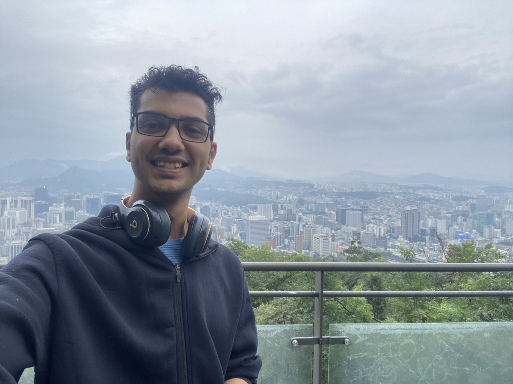
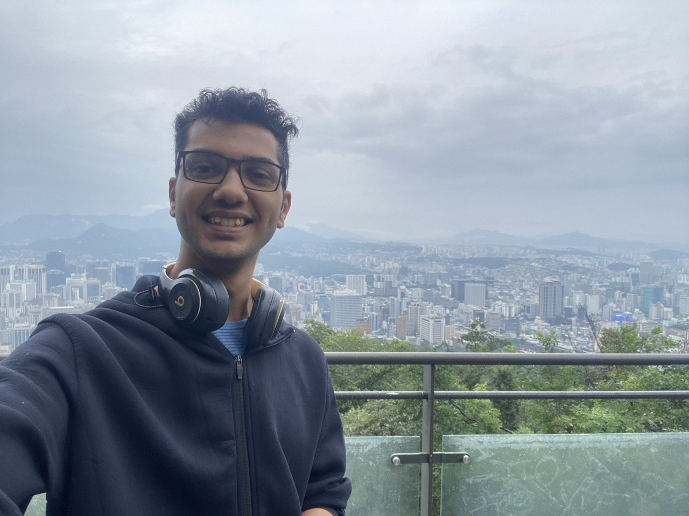
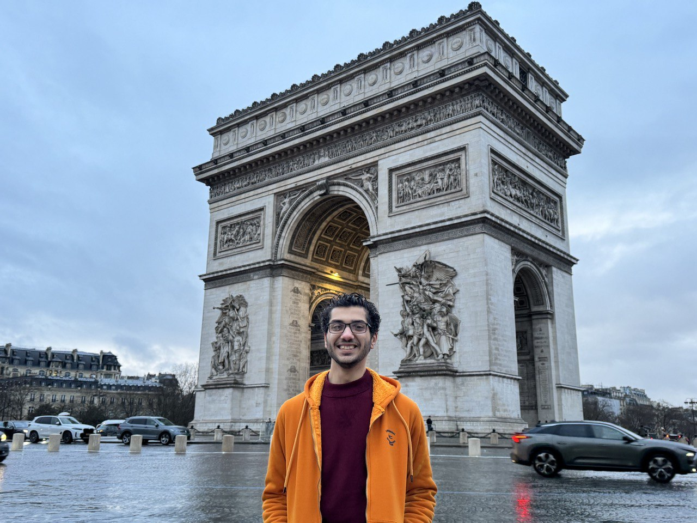
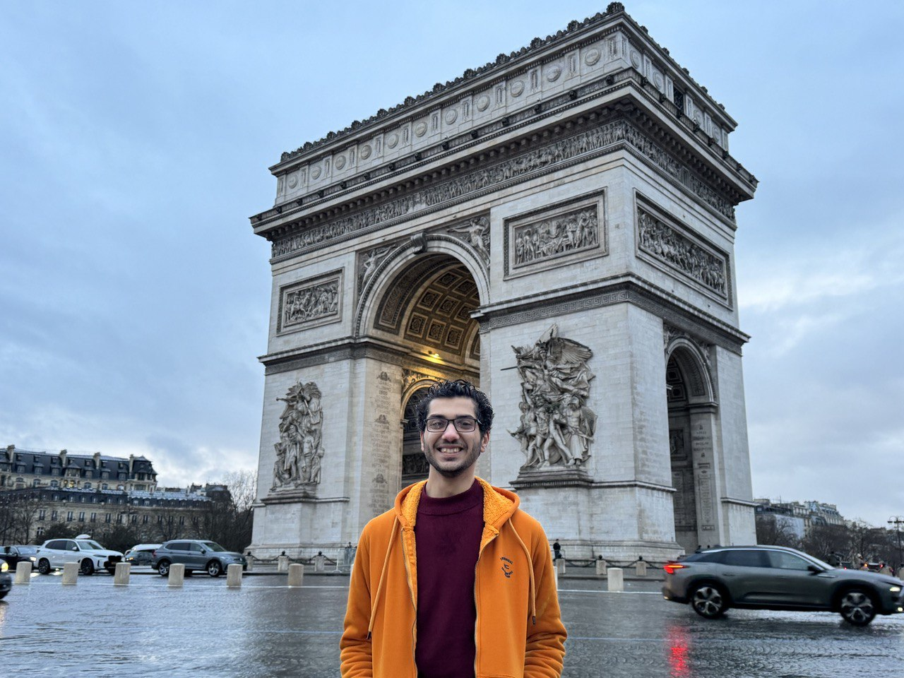

— Bilbo Baggins, The Lord of the Rings: The Fellowship of the Ring

— Bilbo Baggins, The Lord of the Rings: The Fellowship of the Ring

I was born and raised in Egypt, where I spent the first 17 years of my life. We were a lovely family of four, and I cherished every moment at home. However, I didn't spend all those years under one roof. I attended a specialized STEM boarding school, a groundbreaking program by USAID and the Egyptian Ministry of Education, aimed at preparing the next generation of Egyptian leaders.
During my three years at this school, I took on the challenge of creating Capstone projects that addressed significant issues in Egyptian society. One project focused on innovative architecture to tackle housing problems, another on environmental engineering solutions for cleaner cities, and the third on developing alternative energy sources to power our future. These projects weren't just academic exercises; they won competitions and brought real solutions to the table.
But beyond the accolades and achievements, the most rewarding part was the friendships I forged. The school, which I initially resented for taking me away from my family at a young age, became my second home. The friends I made there are like brothers to me, and the experience was a divine step in my destiny, preparing me for the next leap in my life.

One of my dreams since childhood was to live in San Francisco. The Golden Gate Bridge, the breathtaking scenes from the movie San Andreas, and the incredible blend of green nature, blue ocean, and modern skyscrapers always fascinated me. I would tell myself, “I should be there one day.” And guess what? It happened.
I never imagined or believed I would be studying abroad before even becoming a legal adult, as I traveled when I was just 17. I applied to a university with a 2% acceptance rate, recognized as the #1 top innovative university by the World University Rankings for Innovation (WURI). Could I be one of those 120 students selected globally for my cohort? Is that even possible? I didn’t even consider applying abroad until the summer of my senior year, which was two years later than most others.
Arriving in San Francisco and joining Minerva was surreal. The scenes from "The Pursuit of Happyness," "Ant-Man," and "GTA" turned out to be true. The city, with its stunning views and vibrant culture, quickly became my new home. I was immersed in a diverse community of brilliant minds from over 40 countries. Getting exposed to such a huge diversity of cultures and ideas was overwhelming but incredibly enriching. It taught me to think critically, adapt quickly, and embrace different perspectives.
One of the highlights of my time in San Francisco was my involvement with YouthSF, a local organization dedicated to empowering young people. Through YouthSF, I had the opportunity to work on community projects, mentor younger students, and develop leadership skills. This experience was incredibly fulfilling and allowed me to give back to the community that had welcomed me so warmly.
 

To start the actual unique experience of my university, Minerva, I went to Seoul, South Korea, in my sophomore year. I was not very familiar with Korean culture since I wasn't a top fan of K-drama (now I am, and shoutout to "Mouse" and "Train to Busan" for introducing me to it). It was my first time living in a country where I didn't understand or speak the language. The food culture was very different for me, as I hated eating instant noodles and seafood.
I won't hide it; my first three weeks there were terrible. But then I decided to open my eyes and see the beauty of the country. Korea was literally a paradise. Green spaces everywhere. The people were incredibly friendly, and the streets were always safe, even if you walked late at night (especially important for someone who witnessed a murder and was almost kidnapped in the streets of San Francisco).
I immersed myself in the culture by visiting Busan and Jeju as well. Busan, with its beautiful beaches and bustling city life, and Jeju, with its stunning natural landscapes and volcanic formations, were highlights of my time in Korea.
Living in Seoul taught me to embrace new experiences and step out of my comfort zone. I explored traditional markets, tried new foods, and even picked up some basic Korean phrases. The city's blend of ancient palaces and modern skyscrapers was mesmerizing.
While in Seoul, I also had the incredible opportunity to work with Infinyx Co., a forward-thinking company dedicated to innovative solutions in technology. My experience there was eye-opening and contributed significantly to my professional growth. Working with a team that was passionate about leveraging technology to solve real-world problems was inspiring and aligned perfectly with my career aspirations.
 

My next spring was spent in Berlin, a city that would challenge me in unexpected ways. I had learned German as a second language in high school alongside English and Arabic, so finally being able to master the language while living among the natives felt incredibly fulfilling.
Berlin brought mixed feelings. On one hand, I felt an immense sense of belonging. The significant presence of Arabs and Muslims made it feel like a home away from home. There was even a street known as "Arab Street" with so many Arab stores that it felt like walking through the streets of Cairo. The one-hour time difference between Berlin and home made it easy to stay connected with my family and friends, which brought a sense of comfort.
However, the weather in Berlin was something I struggled with deeply. It was the gloomiest place I had ever been. During the first month, I woke up and went to sleep in darkness—an eerie contrast to the sun-drenched days I was used to. This constant gloominess weighed heavily on my spirit, making it difficult to adjust.
Despite the challenging weather, Berlin had its own unique beauty. The history, the culture, and the people made every day an adventure. I had the incredible opportunity to travel to four more countries outside Germany: France, Belgium, Greece, and the Czech Republic. Each trip was a revelation. Standing beneath the Eiffel Tower was a dream come true. Brussels' modern charm, Prague's medieval allure, and Corfu's sunny beaches were unforgettable. But amidst these travels, I faced significant hardships. My laptop and iPad were stolen, and my phone broke (which costed me around 3000$).
But through these challenges, Berlin taught me resilience. I learned to navigate adversity and find strength in myself. The setbacks I faced didn't define my experience; rather, they highlighted my capacity to overcome. Berlin, with its stark contrasts and rich history, became a place of profound personal growth. Berlin wasn’t just a city; it was a crucial chapter in my journey, a place that tested my limits and expanded my horizons. It taught me that even in the darkest times, there is always light to be found.